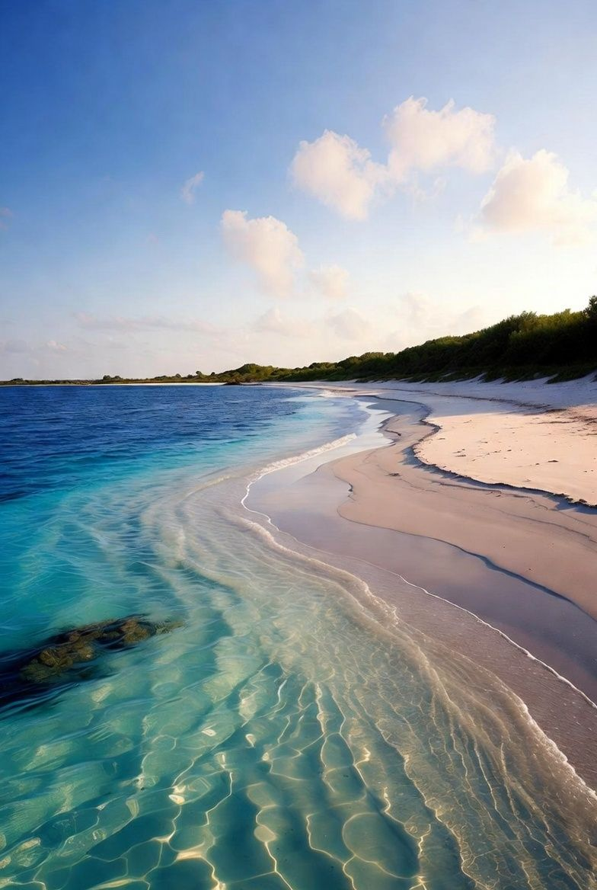
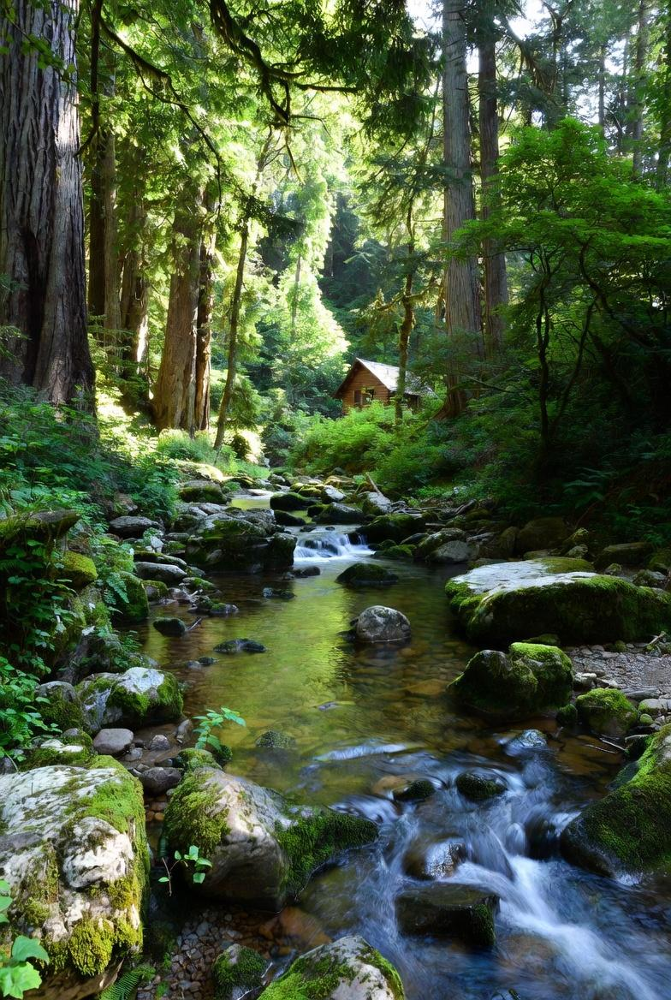
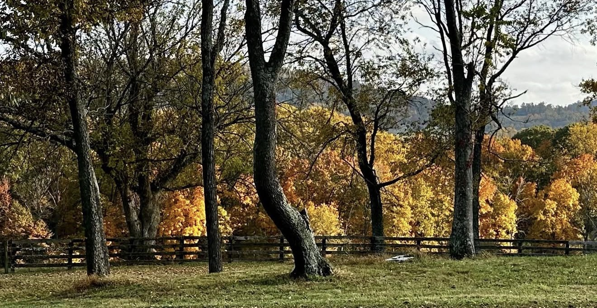
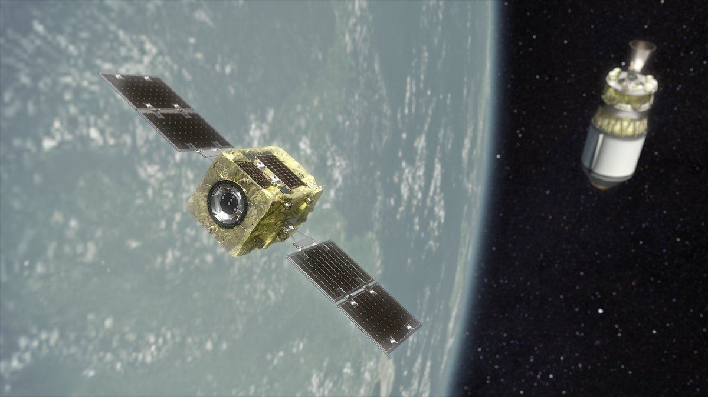
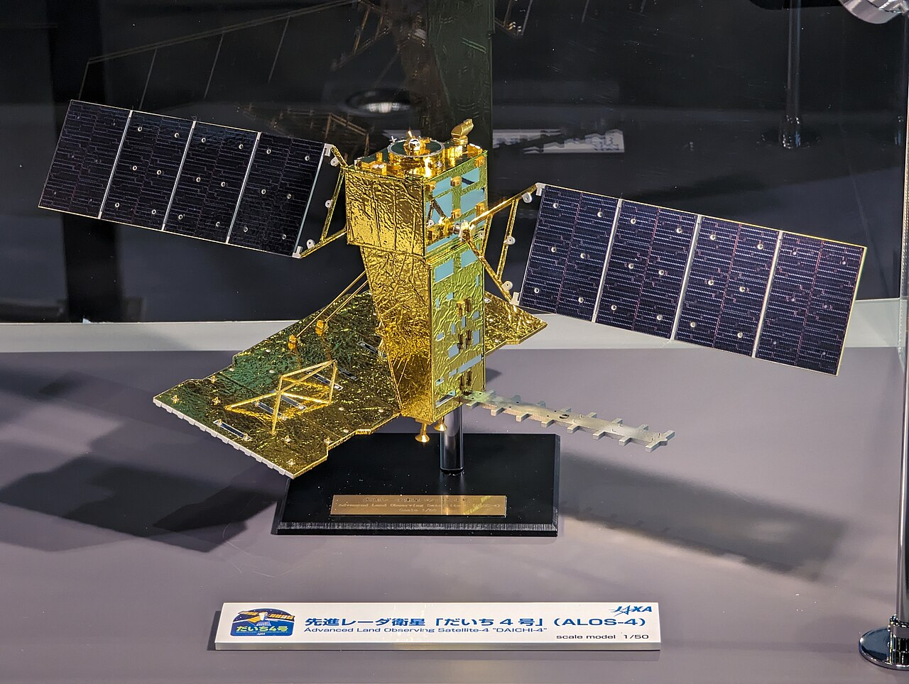
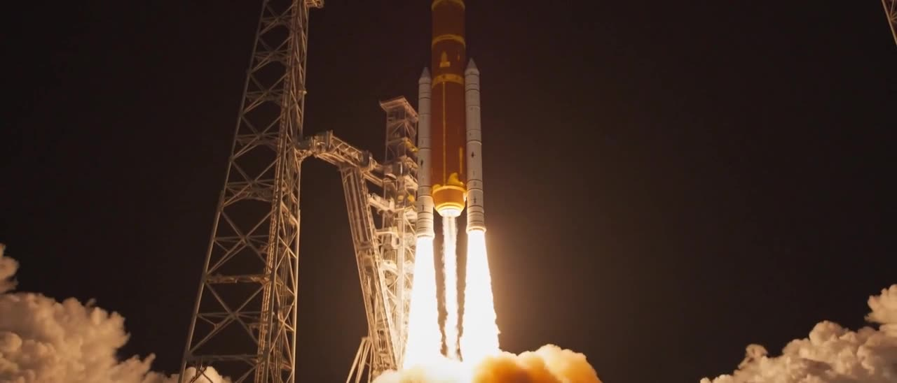

Creado por el fundador y SI4ocean
4ocean retira plástico de océanos, ríos y costas con equipos de limpieza a tiempo completo, financiados con productos hechos de plástico recuperado.
Creado por el fundador y SI.
ACCIÓN POSITIVA, NO PÁNICO
Cada arreglo que funciona para el planeta — revisado para ti, explicado para niños y a un clic de ayudar.
Explorar todas las solucionesFormas de ayudarEncuéntrame una soluciónCrear un plan de clase gratis
Un mundo en el que cada persona que aprende vea que la gente ya está sanando el planeta, y sepa exactamente cómo sumarse. De la historia de la Tierra en el tiempo profundo, en BeforeSavingPlanets, a las soluciones que funcionan hoy aquí, convertimos el asombro en pasos claros: rutas de aprendizaje, herramientas para docentes y niños, un mapa mundial de proyectos reales y 266 soluciones en 11 centros en seis idiomas. Sin fatalismo. Solo educación gratuita y con fuentes, que muestra lo que funciona y señala a familias, aulas y comunidades formas de ayuda de confianza.
🤖 Traducción redactada por máquina, pendiente de revisión.

Ver las soluciones en el mapa mundial

Creado por el fundador y SI4ocean retira plástico de océanos, ríos y costas con equipos de limpieza a tiempo completo, financiados con productos hechos de plástico recuperado.

Creado por el fundador y SIAmerican Rivers has worked directly on more than 200 dam removals; in 2025 the U.S. removed 100 dams and reconnected more than 4,893 river miles.

Each year, Adopt-a-Beach volunteers remove tens of thousands of pounds of litter from Great Lakes beaches, about 85% of it plastic.

African Parks gestiona 24 áreas protegidas en 13 países, con más de 20 millones de hectáreas, en alianza con gobiernos y comunidades locales (ONG).

Creado por el fundador y SISince 1875, American Forests has worked to restore U.S. forests, from big natural landscapes to city streets, with more than 63 million trees planted.

Desde 1972, la Arbor Day Foundation dice haber plantado más de quinientos millones de árboles, en más de 60 países (cifras de la organización).
Satélites, misiones y una órbita más limpia

Astroscale inspecciona, da servicio y retira basura en órbita: ELSA-d, el primer plano de ADRAS-J en 2024 de una etapa superior H-IIA, y ADRAS-J2, previsto para el año fiscal 2027.

Ariel, misión de la ESA, estudiará la atmósfera de mil planetas que orbitan otras estrellas para revelar de qué están hechos (ESA).

El radar de DAICHI-4 de JAXA ve a través de las nubes en una franja de 200 km, continuando el registro de radar usado para las alertas de deforestación.

Solución de la semana
Cuatro astronautas rodearon la Luna en abril de 2026 y llegaron a 406.771 km de la Tierra, lo más lejos que han viajado los humanos (NASA).
VoluntariadoAbre la ciencia ciudadana de la NASA. No es una donación.
Creado por el fundador y SI.
Totales acumulados de las soluciones de este sitio. Toca un número para ver la solución detrás.
Fuente: Life Terra (cifra de la organización) · A mayo de 2026
Fuente: The Ocean Cleanup (cifra de la organización) · A octubre de 2026
Fuente: NASA · A abril de 2026
Lo que cambió recientemente en el sitio. Suscríbete al boletín semanal para recibirlo cada semana.
Esta semana, una acción
VoluntariadoAbre la ciencia ciudadana de la NASA. No es una donación.
El plástico, los bosques y la energía son problemas que podemos resolver juntos. Envía una idea o comparte una solución que conozcas. Si tu solución cumple nuestros criterios de solución, nos encantaría publicar tu solución en nuestro sitio. Si quieres donar, visita nuestra página de Soluciones y elige la que encaje con tus intereses.
Escribe a ideas@savingplanets.com con tus ideas y/o soluciones para posible inclusión en nuestro sitio.
Todos los enlaces para donar o hacer voluntariado también están en un solo lugar: Formas de ayudar
AguaOcéano (45)Ríos (23)Lagos (14)Polos (35)
TierraBosques (38)
EspacioEspacio (11)Proyecto Rawane (14)Observación de la Tierra (47)Defensa planetaria (13)Clima espacial (12)Eliminación espacial (14)
Cifras publicadas por cada organización en su propio sitio. Las revisamos a mano y mostramos la fecha de la última revisión.